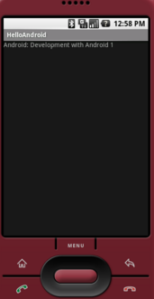

2021-12-26
It's 2021 and Android 12 is out. But we document here how to develop an app for Android 1 - API Level 2 (the release before Cupcake - API Level 3).
You may ask now why should I invest time to run Android 1 as almost (from 2008) 13 years past. If you today start with android development then you may overwhelmed by the ecosystem.
By going back to history and rebuilding / developing apps for Android 1 you may get a better understanding of the ecosystem.
E.g. at the beginning there was a console tool like android or activitycreator (according to documentation it was a python script).
All here described steps can be applied for ubuntu (linux) with architecture x86 64bit. We want to keep it easy and clean we don't use any IDE. Everything is done with console tools.
First of all we need to setup our environment. Instead of gradle the initial build mechanism for android was ant. For sure there was no Java 17 that's why we use Java 1.6 to be compatible. The most interesting part here is to get the android sdk 1.1 r1.
# get java 1.6
# ensure to set JAVA_HOME and PATH directing to java jdk 1.6 bin
curl https://cdn.azul.com/zulu/bin/zulu6.10.0.3-ca-jdk6.0.73-linux_x64.zip --output jdk1.6.zip
# get apache ant (minimum Java 5 runtime)
curl https://dlcdn.apache.org//ant/binaries/apache-ant-1.9.16-bin.zip --output apache-ant.zip
# get android sdk release 1.1 r1
curl https://dl.google.com/android/archives/android-sdk-linux_x86-1.1_r1.zip -o android1.1.zip
You downloaded the jdk 1.6. Now the system should know it as the default java version.
Create a bash script called j6.sh.
#!/bin/bash
export JAVA_HOME=$HOME/development/zulu1.6.0_73-6.10.0.3-x86lx64
unlink $HOME/development/jdk
ln -s $JAVA_HOME $HOME/development/jdk
java -version
Afterwards the script is referenced in alias. Aliases can be defined in ~/.bash_aliases.
alias j6="source $HOME/development/j6.sh"
alias j8="source $HOME/development/j8.sh"
alias j11="source $HOME/development/j11.sh"
Finally add the jdk path to your environment PATH variable. I use the ~/.profile for that purpose.
PATH="$HOME/development/jdk/bin:$PATH"
If you did that for other Java version, then you can switch between the available java version in a comfortable way.
You should now prepared to create an android application, build it, start the emulator, install the apk to the emulator.
Full list of commands using activitycreator, emulator and adb.
# create an application
./android-sdk-linux_x86-1.1_r1/tools/activitycreator --out HelloAndroid com.android.hello.HelloAndroid
HelloAndroid$ tree
.
├── AndroidManifest.xml
├── bin
├── build.xml
├── default.properties
├── libs
├── res
│ ├── layout
│ │ └── main.xml
│ └── values
│ └── strings.xml
└── src
└── com
└── android
└── hello
├── HelloAndroid.java
└── R.java
9 directories, 7 files
# start emulator
./android-sdk-linux_x86-1.1_r1/tools/emulator
# build (this creates the apk)
ant debug
Buildfile: HelloAndroid/build.xml
...
# install apk
android-sdk-linux_x86-1.1_r1/tools$ adb install HelloAndroid-debug.apk
Performing Push Install
HelloAndroid/bin/...ebug.apk: 1 file pushed, 0 skipped. 23.7 MB/s (4784 bytes in 0.000s)
pkg: /data/local/tmp/HelloAndroid-debug.apk
Success
# uninstall apk (with package name)
android-sdk-linux_x86-1.1_r1/tools$ adb uninstall com.android.hello
Success
Create an app with android command line tool (available in Android 1.5).
android-sdk-linux_x86-1.5_r3/tools/android update project --path HelloActivity/ --target 1
